Splines and real world data
This a demonstration of a spline function being fit to real-world data.
Copyright 1987-2003 C. de Boor and The MathWorks, Inc. $Revision: 5.24 $
Overview
Here are some data which record a property of titanium measured as a function of temperature. We'll use it to illustrate some issues with spline interpolation.
The plot of the data shows a rather sharp peak.
hold off
[xx,yy]=titanium;
frame=[-1 1 -.1 .1]+[min(xx),max(xx),min(yy),max(yy)];
plot(xx,yy,'x');
axis(frame);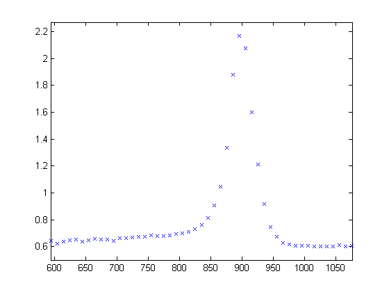We pick a few data points from these somewhat rough data, since we want to interpolate. Here is a picture of the data, with the selected data points marked.
hold on
pick=[1 5 11 21 27 29 31 33 35 40 45 49];
tau=xx(pick);
y=yy(pick);
plot(tau,y,'ro');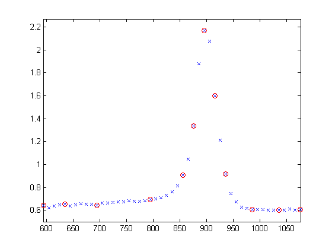Since a spline of order k with n+k knots has n degrees of freedom, and we have 12 data points, a fit with a fourth order spline requires 12+4 = 16 knots. Moreover, this knot sequence t must be such that the i-th data site lies in the support of the i-th B-spline. We achieve this by using the data sites as knots, but adding two simple knots at either end.
dl = tau(2)-tau(1); dr = tau(end)-tau(end-1); t = [tau(1)-dl*[2 1] tau tau(end)+dr*[1 2]];
We use this knot sequence to construct an interpolating cubic spline:
sp = spapi(t, tau, y);
dl=tau(2)-tau(1); dr=tau(end)-tau(end-1); t=[tau(1)-dl*[2 1] tau tau(end)+dr*[1 2]]; % construct the knot sequence hold on axis(frame+[-2*dl 2*dr 0 0]) plot(t,repmat(frame(3)+.03,size(t)),'kx') hold off sp=spapi(t,tau,y); % This constructs the spline.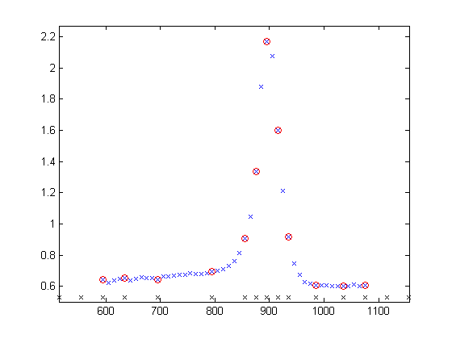
Now, for the plot. Since we do not care about the part of the spline outside the data interval, we restrict the plot to that interval:
hold on, fnplt(sp,[tau(1) tau(end)], 'k'), hold off
plot(xx,yy,'x',tau,y,'ro'), axis(frame), hold on % Now, for the plot: fnplt(sp,[tau(1) tau(end)], 'k') hold off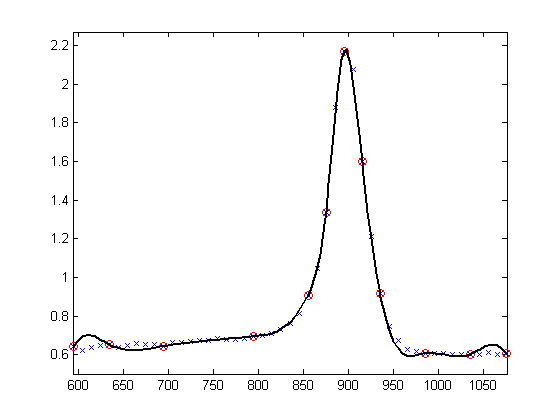
A closer look at the left part of the spline fit shows some undulations.
xxx = linspace(tau(1),tau(5),41); plot(xxx, fnval(sp, xxx), 'k', tau, y, 'ro'); axis([tau(1) tau(5) 0.6 1.2]);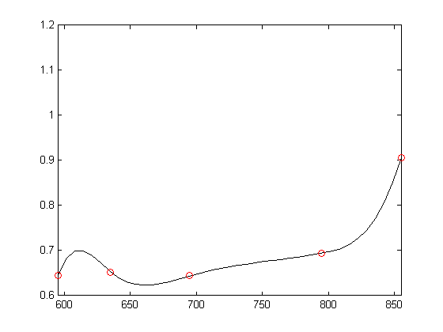
The unreasonable bump in the first interval stems from the fact that our spline goes smoothly to zero at its first knot.
Here is a picture of the entire spline, along with its knot sequence.
axis([tau(1) tau(5) 0.6 1.2]); fnplt(sp,'k'); hold on, plot(t,repmat(.1,size(t)),'kx'), hold off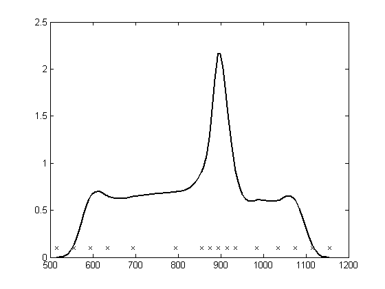
Here are again the data points as well.
hold on
plot(tau, y, 'ro');
hold off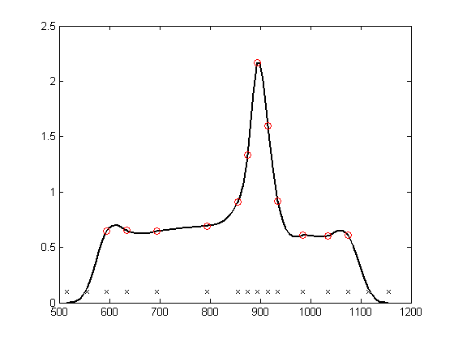Here is a simple way to enforce a more reasonable boundary behavior. We add two more data points outside the given data interval and choose as our data there the values of the straight line through the first two data points.
tt=[tau(1)-[4 3 2 1]*dl tau tau(end)+[1 2 3 4]*dr]; xx=[tau(1)-[2 1]*dl tau tau(end)+[1 2]*dr]; yy=[y(1)-[2 1]*(y(2)-y(1)) y y(end)+[1 2]*(y(end)-y(end-1))]; sp2=spapi(tt,xx,yy); fnplt(sp2,'b',tau([1 end])) hold on plot(tau,y,'or', xx([1 2 end-1 end]),yy([1 2 end-1 end]),'ko'); axis(frame+[-2*dl 2*dr 0 0]); hold off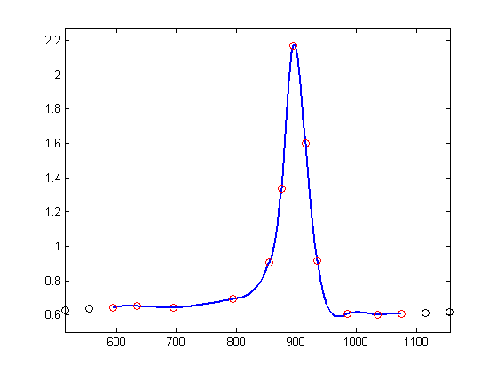
Here is also the original spline fit, shown in black, to show the reduction of the undulation in the first and last interval.
hold on
fnplt(sp,'k',tau([1 end]))
hold off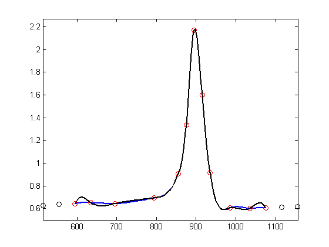Finally, here is a closer look at the first four data intervals which shows more clearly the reduction of the undulation near the left end.
plot(xxx,fnval(sp2,xxx),'b',tau,y,'ro',xxx,fnval(sp,xxx),'k'); axis([tau(1) tau(5) .6 2.2]); hold off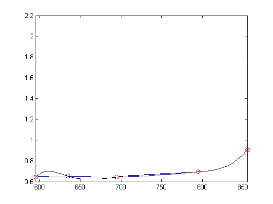
automatic knot choice for interpolation
If all this detail turns you off, let the spline toolbox choose the knots for you, by using the spline interpolation command SPAPI in the form spapi( order, data_sites, data_values )
autosp = spapi( 4, tau, y); fnplt(autosp,'g') hold on, plot(tau, y, 'or'), hold off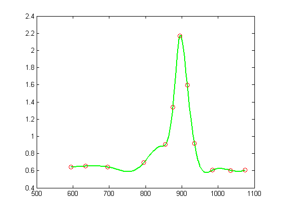
Here is the result of a much better knot choice (plotted above as red x's), obtained by shifting the knot at 842 slightly to the right and the knot at 985 slightly to the left.
knots = fnbrk(autosp,'knots'); hold on, plot(knots, repmat(.5,size(knots)),'xg') knots([7 12]) = [851, 971]; plot(knots, repmat(.54,size(knots)),'xr') adjsp = spapi(knots, tau, y); fnplt(adjsp,'r',2), hold off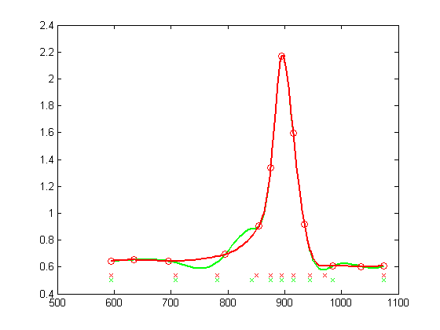
Else, simply try the standard cubic spline interpolant, supplied by CSAPI (which amounts to a slightly different choice of knots):
The next and last slide shows all five interpolants, for comparison.
autocs = csapi(tau, y); fnplt(autocs,'c') hold on, plot(tau, y, 'or'), hold off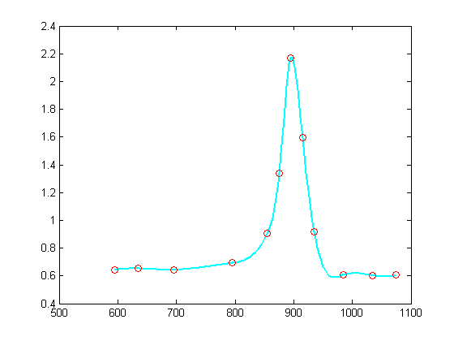
With such fast varying data, it is hard to get agreement among all reasonable interpolants, even if each of them is a cubic spline.
hold on fnplt(sp,'k',tau([1 end])) % black: original fnplt(sp2,'b',tau([1 end])) % blue: with special end conditions fnplt(autosp,'g') % green: automatic knot choice by SPAPI fnplt(autocs,'c') % cyan: automatic knot choice by CSAPI fnplt(adjsp,'r',2) % red: knot choice by SPAPI slightly changed hold off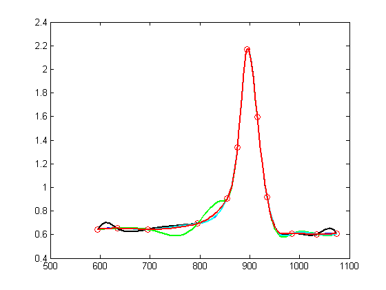